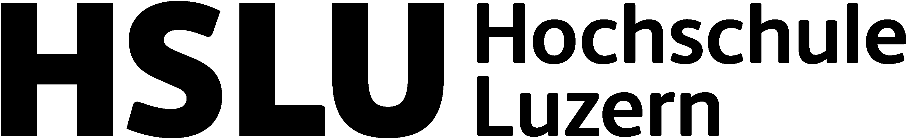
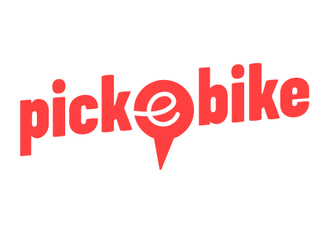
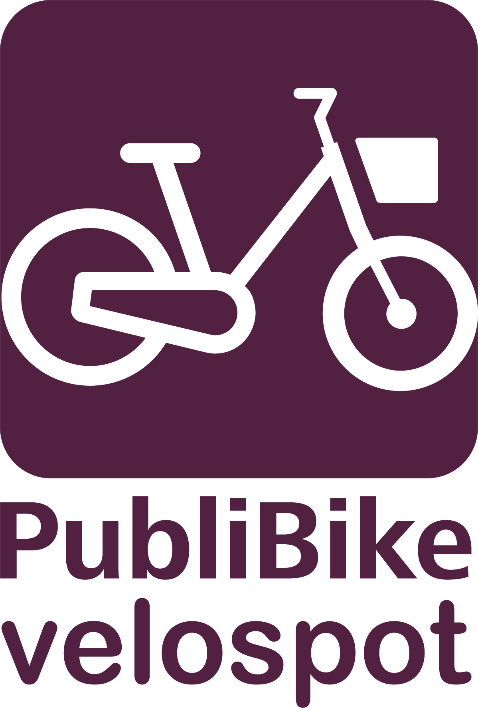

Rather than being mainly an expression of environmental ideology, intensive EBSS use seems to emerge where shared e-bikes solve concrete mobility problems better than available alternatives.
POTEBS investigates how e-bike-sharing systems can support sustainable mobility transitions as part of a flexible multimodal mobility system. Using the Basel metropolitan area as a case study, the project examines both user and provider perspectives to better understand where e-bike sharing creates value, what limits its uptake, and how it can be more effectively integrated with public transport.
To provide policymakers and decision-makers with evidence on the potential of e-bike-sharing systems as part of a sustainable mobility system, and on how the combined use of EBSS and public transport can be facilitated.
The project focuses on both user needs and provider perspectives, because matching supply and demand is crucial for the success of new mobility concepts and services.
The project explicitly considers urban and peri-urban contexts, allowing a more nuanced assessment of the role of EBSS across different spatial types.
Overarching question:
How can e-bike sharing systems (EBSS) support the mobility transition as part of a flexible multimodal mobility system?
RQ1: How do different groups of people use EBSS, alone or as part of multimodal mobility, what hampers use and what benefits do users ascribe to this form of mobility?
RQ2: What business models for EBSS or a combination of EBSS and public transport could build on user needs?
RQ3: How can EBSS contribute to a sustainable mobility system in urban and peri-urban regions, and which measures could support this contribution?
EBSS is widely discussed as a lever for sustainable urban mobility. Yet existing research leaves a critical question open: which users ride intensively, and why? Five strands of prior literature define what is known — and where the gap lies.
EBSS users skew young, male, and highly educated (Reck & Axhausen, 2021). Usage is deeply concentrated: the top 22% of users account for 81% of trips (Langford et al., 2013), and roughly half of all registered users are dormant, never returning after sign-up. The financial health of any system therefore rests on a small core of frequent riders.
Electric assistance lowers physical effort, raises average speeds, and extends practical cycling range — flattening topographic barriers. Shared e-bike trips are longer in distance yet shorter in duration than pedal-bike trips, and demand is more resilient to adverse weather (Zheng et al., 2025). These properties position EBSS to compete directly with public transport for longer, time-sensitive urban trips (Guidon et al., 2019).
Vehicle acquisition, maintenance, rebalancing, and vandalism costs frequently exceed revenues, creating subsidy dependence (de Chardon, 2019; Bieliński et al., 2024). Users show strong price sensitivity and low willingness-to-pay. Promotional free-ride periods generate short-lived demand spikes; expanded access options mostly encourage occasional rather than sustained high-frequency use (Weschke, 2024).
Dock-based systems offer predictable pickup and return locations suited to routine commutes; free-floating systems enable flexible point-to-point travel but introduce vehicle-availability uncertainty (Shaheen & Chan, 2016). Evidence from Zurich suggests commuters favour dock-based EBSS for predictability, while free-floating systems show more dispersed spatial use (Reck et al., 2021). Whether intensity predictors differ across these designs has not been studied.
Environmental attitudes are frequently cited as adoption motivators, yet a persistent gap between pro-environmental attitudes and actual travel behavior is well documented (Kroesen et al., 2017; Steg & Vlek, 2009). The Theory of Planned Behavior predicts greener attitudes should increase EBSS use; the Technology Acceptance Model points instead to perceived usefulness and ease of use. Which mechanism dominates among active users is empirically unsettled.
These five strands converge on a striking absence. To the best of our knowledge, no existing study provides clear empirical insight into which personal characteristics make a person more likely to use EBSS frequently — and how this interacts with the type of system in place. POTEBS directly addresses this gap by combining approximately 1.4 million operational trip records with linked survey data across free-floating and dock-based systems in the Basel metropolitan area.
A three-stage workflow connects raw data to inference: attitudinal measurement via exploratory factor analysis, data-driven user segmentation via Gaussian Mixture Modeling, and predictive modeling via multinomial logit with random forest validation.
Two parallel online surveys — structurally identical, differing only in operator branding — were distributed to approximately 32,000 registered users across both systems. After quality screening (speeders, straight-liners, low reCAPTCHA scores), 1,844 responses were retained. Of these, 1,743 were linked at individual level to the full operational trip history, combining stated preferences with revealed behavior.
Exploratory Factor Analysis (EFA) reduced 32 Likert-scale survey items to seven latent attitudinal constructs, including weather tolerance, environmental self-identity, perceived functional superiority over PT, and multimodal complementarity behavior. Gaussian Mixture Model (GMM) clustering on log-transformed rentals per month then identified three data-driven usage segments — low, medium, and high intensity — without imposing arbitrary thresholds.
Multinomial logit (MNL) models predicted segment membership from demographic, geographic, mobility-tool, and attitudinal predictors via backward elimination. Three models were estimated: a combined model with provider fixed effect, and separate models per system. Results were validated through 5-fold cross-validation and random forest feature importance rankings, which broadly corroborated the MNL findings.
Linking individual survey responses to operational trip histories enables triangulation between stated and revealed preferences. The key behavioral predictor — temperature variance across each user's actual trip history — captures demonstrated weather resilience independently of survey self-reports, and shows negligible correlation with trip volume (r=0.05), confirming it as a genuine behavioral trait.
The combined MNL model (McFadden's pseudo-R²=0.128, N=1,743) reveals a clear hierarchy: behavioral and utilitarian factors consistently outperform attitudinal and demographic predictors of usage intensity.
The top 20% of users generate 80.3% of all trips (Gini=0.77). GMM clustering identified three segments: low-intensity (48%, mean 0.20 rentals/month — approx. one rental every five months), medium-intensity (39%, mean 1.60), and high-intensity power users (13%, mean 12.71 — riding every two to three days). The ~48% dormancy rate closely replicates Reck & Axhausen (2021) for Swiss EBSS.
Users with stronger environmental self-identity were 32% less likely to be power users (RRR=0.68, p<0.001). This directly contradicts Theory of Planned Behavior predictions and challenges policy narratives positioning EBSS as a solution for environmentally motivated users. In Basel's sustainable transport context, green-minded users may already travel by foot, conventional bike, or PT.
Revealed temperature variance — the SD of trip-level temperatures across a user's ride history — raised power-user likelihood by 40% (RRR=1.40, p<0.001). Multimodal complementarity behavior was the strongest attitudinal predictor: users integrating EBSS with PT and treating it as a fallback were 64% more likely to be power users (RRR=1.64, p<0.001). Hedonic enjoyment predicted moderate use but not power-user status.
System-specific models reveal two distinct power-user types. Dock-based routine optimizers are urban commuters whose exceptional weather resilience (RRR=2.78) and perceived PT superiority reflect habitual corridor-level commitment. Free-floating flexibility maximizers are younger multimodal travelers for whom seamless PT integration dominates (RRR=2.14). Both archetypes are pragmatic — neither is distinguished by environmental ideology.
75.5% of users report substituting public transport at least sometimes, versus 34% substituting car trips. Three-quarters of displaced trips already come from sustainable modes, limiting direct decarbonization impact. EBSS instead positions itself as a peak-hour PT overflow valve, a first/last-mile connector, and a reliable fallback that supports car-free lifestyles.
EBSS is a useful but bounded tool. Policy that calibrates expectations accordingly — and invests in the conditions that sustain power users — will extract more value than policy premised on broad environmental appeal or dramatic car substitution.
Dock-based and free-floating systems serve complementary functions. Dock-based anchors urban commuter demand; free-floating extends coverage to suburban areas with higher car-substitution potential. Despite the dock-based system's higher power-user share, the free-floating system achieved 2.5× more rentals per bike per day — suggesting different efficiency profiles that justify co-existence rather than competition.
The negative association between environmental self-identity and power-user status suggests that sustainability-focused marketing may actively misfire among the target segment. Power users value time savings, flexibility, and reliability. Communications should lead with concrete functional benefits — door-to-door speed versus PT, weather-independent commuting — rather than environmental framing.
Revealed weather resilience is the strongest behavioral predictor of intensive use. Expanding this user base requires infrastructure that lowers the cost of riding in adverse conditions: consistent winter maintenance of cycling paths, covered parking at transit hubs, and real-time path condition information. Prioritizing maintenance over new construction could yield meaningful returns.
Service reliability concerns disproportionately suppressed potential power users — exactly the segment operators most need to retain. Appropriate fleet sizing, demand-responsive rebalancing, real-time availability information, and short-term advance booking (e.g., 15-minute reservation windows) could convert occasional riders into regulars. Service quality improvements may have multiplicative effects on system viability.
Multimodal complementarity is the strongest attitudinal predictor of power-user status. Three integration priorities follow: fare integration enabling combined subscriptions (EBSS + PT), information integration displaying EBSS availability in journey planners (SBB App, Google Maps), and physical integration ensuring EBSS stations facilitate seamless transit transfers at key hubs.
Direct decarbonization is limited — three-quarters of substituted trips come from sustainable modes. But EBSS generates value as multimodal glue, a peak-hour PT overflow valve, and a confidence-builder for car-free lifestyles. If EBSS incubates private e-bike adoption among users who then reduce car use, that is a societal benefit even if shared rental counts decline. Evaluation frameworks should reflect this broader role.
Basel is an ideal but challenging setting. With Switzerland's highest PT modal share (32.5%), a strong cycling culture (11.7% modal share), and the country's lowest motorization rate among major cities (319 cars/1,000 inhabitants), sustainable travel is already the norm — making EBSS adoption harder to explain by necessity alone.
The map shows a commune-based representation of the active EBSS service areas. Municipalities can be displayed separately for Pick-e-Bike only, PubliBike Velospot only, and the overlap of both systems. PubliBike Velospot stations can be toggled on as an additional layer.
A Gini coefficient of 0.77 describes extreme inequality — comparable in magnitude to national income distributions in some of the world's most unequal economies, here applied to trip generation. The typical registered user contributes almost nothing to system activity; a tiny minority drives almost everything.
Each panel shows the cumulative share of trips (or cycling minutes) as a function of the cumulative share of users, for Pick-e-Bike, PubliBike Velospot, and the combined sample. The diagonal represents perfect equality. Hover over the curves for exact values.



The project is guided by an advisory board of practitioners and researchers from transport, mobility policy, and public finance.